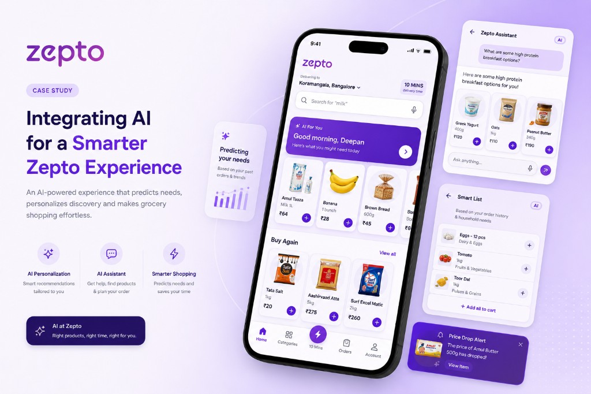
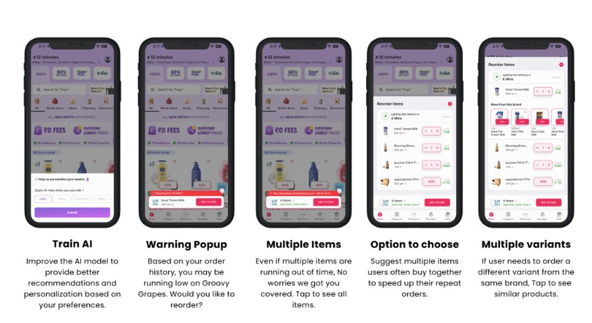
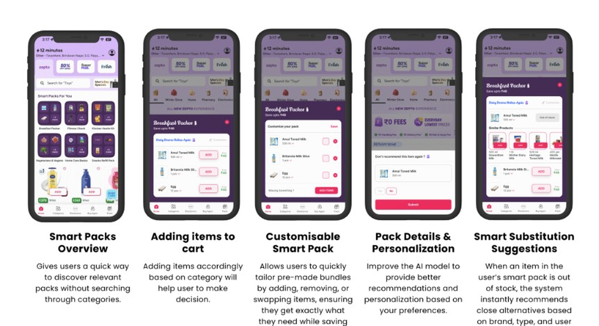
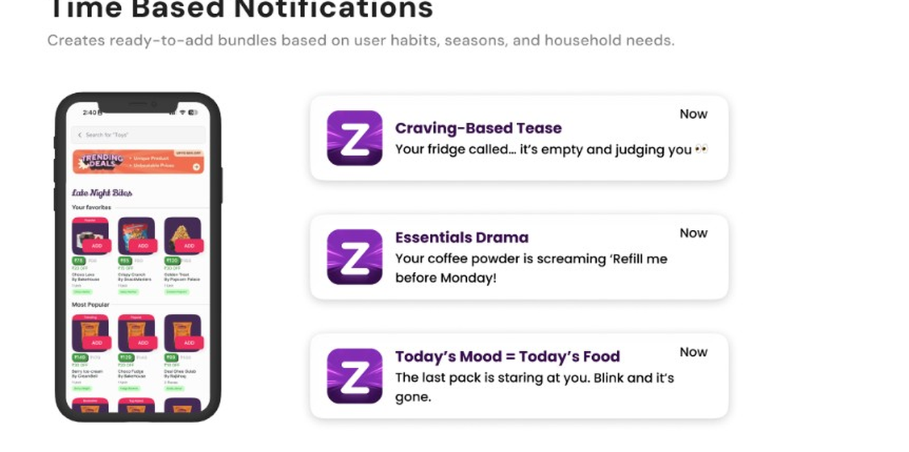

Improve Search Experience
Help users find relevant products faster and more accurately while reducing friction during discovery.
A product design exploration to make Zepto search smarter, more contextual and more useful.

Help users find relevant products faster and more accurately while reducing friction during discovery.
Use better recommendations and contextual discovery to increase engagement, repeat purchases and AOV.
Zepto users often rely heavily on search, but traditional search can struggle when users have broad or unclear intent.
Users frequently complain about search accuracy and personalization.
60–70% of grocery app sessions begin with search rather than navigation.
Users don't know which variant, size, or brand to choose.
Users add only the item they came for, no upsell, cross-sell, or contextual AI nudges.
Search is a high-impact part of the grocery experience because it directly affects discovery, engagement and purchase behaviour.
How might we make Zepto search feel effortlessly smart, personalized, and context-aware?
Move beyond helping users find what they searched for, toward helping them understand what they may need next.
Explored concepts
What I chose to explore
I focused on these three concepts because they could improve discovery while also creating opportunities for repeat purchases, larger baskets and contextual recommendations.
Selected directions
Zepto predicts when frequently purchased essentials may run out and surfaces a timely reorder prompt.
From idea to interface
I explored the interaction through early wireframes to understand how the AI recommendations could appear without interrupting the shopping flow.

Reorder
AI should not repeatedly suggest an item bought only once.
Users may want another size or variant from the same brand.
Avoid recommending something already added.
The final UI lets users train frequency, swap variants, see multiple items together, and dismiss irrelevant prompts, keeping predictions helpful without feeling pushy.
Smart Packs create ready-to-add bundles based on purchase habits, seasons and household needs.
From idea to interface
I used wireframes to see how Smart Pack bundles could surface without interrupting the shopping flow.

Some predicted items may not be relevant today.
Some items may be out of stock.
User wants an item that isn't in the AI list.
Replacing an item can confuse future predictions.
Checkboxes, “don't recommend again” feedback, and similar-product rails address irrelevant items, stock gaps, and model learning without blocking the user.
Use context such as time, behaviour and inferred mood to make discovery more personal and timely.
From idea to interface
I used wireframes to see how mood rails and notifications could appear without interrupting the shopping flow.

Mood & notifications
AI thinks user is “craving” but user wants healthy eating today.
Users get bored when recommendations feel repetitive.
Replacing an item confuses the AI model and future predictions.
Kids ordering snacks at night and parents ordering groceries in the morning create mixed signals.
Playful copy and mood rails need easy dismissals, feedback loops, and profile-aware logic so context feels fun, not wrong.
Secondary objective: increase Zepto's average order value (AOV) through smarter, more contextual discovery.
User
Convenient timely reorders.
Business
More frequent repeat purchases and contextual cross-sells.
User
Convenient bundles and less item-by-item searching.
Business
Larger baskets, bulk purchases and increased order volume.
User
More personalized discovery.
Business
Impulse purchases, add-ons and cross-sells.
Documented future opportunities beyond the three selected directions.
This project taught me to design AI around real grocery behaviour. Search isn't a single query, it's a habit loop shaped by household context, timing, and intent breadth.
Mapping edge cases early (one-time purchases, variant swaps, cart conflicts, shared accounts) made the UI more honest about what AI can suggest and when to stay quiet.
The balance is user value and business value. Recommendations should feel useful and timely, not intrusive. Without live metrics, the outcome is a clearer framework for smarter search, not a claim of measured lift.